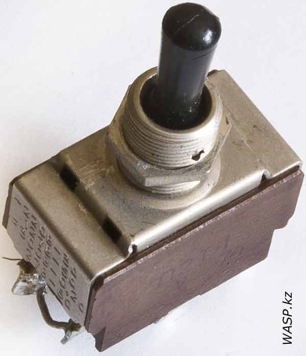
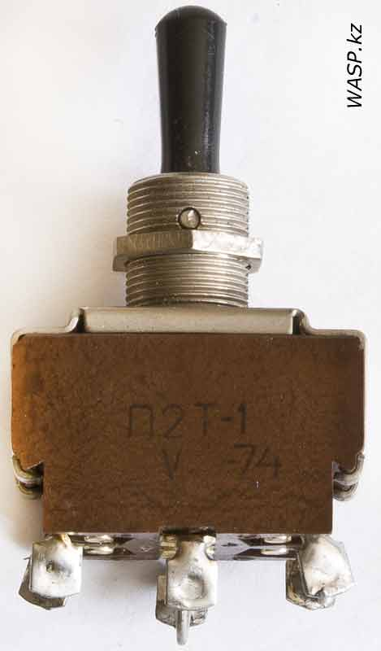
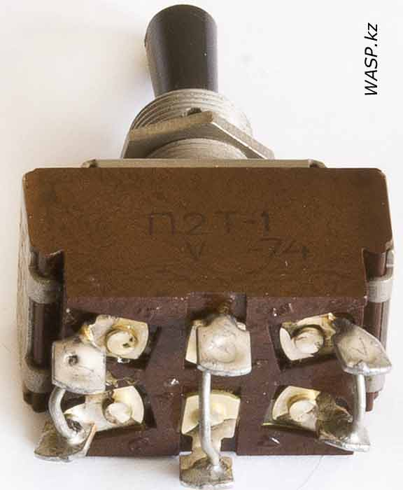

Тумблер двухполюсный П2Т-1
Эти тумблеры предназначены для работы в цепях постоянного и переменного тока в радиоэлектронной аппаратуре. Тумблеры изготавливаются во всеклиматическом исполнении, являются изделиями ручного управления и предназначены для объемного монтажа. Цифра 1 – после дефиса – типономинал, определяющий электрическую схему и исполнение ручки.



Данный экземпляр имеет пластмассовый корпус, пластмассовую ручку и металлическую верхнюю часть. На металлической пластине выбиты технические характеристики: ~220В - 3А, 127В - 5А, =300В - 0,2А, 27В - 6А. На нижней стороне шест выводов.
Характеристики тумблера П2Т-1:
- Усилие переключения – от 2,5 до 30 Н (от 0,25 до 3,0 кгс)
- Сопротивление электрического контакта:
- для изделий с приемкой «СКК» – не более 0,15 Ом;
- для изделий категории качества «ВП» – не более 0,01 Ом
- Сопротивление изоляции – не менее 1 000 МОм
- Электрическая прочность изоляции – 1 100 Вэфф
- Диапазон рабочих температур – от минус 60С до +85С
- Коммутируемый ток от 0,1 до 6,0 А при напряжении от 0,1 до 300 В
- Количество коммутационных циклов – до 5 000
- Срок сохраняемости изделий – 15 лет
- Содержание драгоценных металлов - серебро 0,567304
Микропереключатель П1М9-1В
Однополюсный микровыключатель с одинарным разрывом электрической цепи, предназначен для коммутации постоянного и переменного тока. Изготавливались во всеклиматическом исполнении, для объемного монтажа.
{kind=link}
{kind=link}
Корпус из пластмассы, два монтажных отверстия, корпус имеет боковую крышку, которая держится на одной алюминиевой заклепке. Сбоку маркировка: логотип производителя - Затем название: П1М9-1В, буква А и цифрами промаркированы выводы. Две контактные площадки позолочены, средняя из серебра.
Характеристики микропереключателя П1М9-1В:
- Нагрузка - активная и индуктивная
- Токи - переменный и постоянный от 0,01 до 127 В 2,5 А
- Масса переключателя - 10 г
- Сопротивление изоляции - не менее 1000 МОм
- Наличие фиксации – в исходном состоянии
- Время срабатывания подвижных контактов – не более 0,03 с
- Рабочий ход приводного элемента 1,5 – 3,5 мм
- Дополнительный ход – не менее 0,6 мм
- Дифференциальный ход – не более 1,2 мм
- Электрическая прочность изоляции 1100 В
- Усилие при прямом срабатывании – не более 8,5 Н
- Усилие при обратном срабатывании – не менее 0,5 Н
- Сопротивление электрического контакта не более 0,05 Ом
- Допустимая температура окружающей среды от –60°С до +100°С
- Число циклов переключения – 50 000 – 1 000 000 (в зависимости от режима коммутации)
- Содержание драгоценных металлов - золото 0.171 грамм, серебро 0.16 грамм.